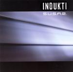

| Artist: | Indukti |
| Title: | SUSAR |
| Label: | The Lasers Edge LE1042 |
| Length(s): | 48 minutes |
| Year(s) of release: | 2005 |
| Month of review: | [02/2006] |
| 1) | Freder | 7.30 |
| 2) | Cold Inside... I | 4.05 |
| 3) | No. 11812 | 7.59 |
| 4) | Shade | 4.29 |
| 5) | Uluru | 6.34 |
| 6) | No. 11811 | 7.25 |
| 7) | ...and Weak II | 9.38 |
The electric violin is reminiscent of Jean-Luc Ponty. The firm bass with guitars used both in a rhtyhmic and melodic vein further fills in the band's style. Four of the albums tracks are instrumental, only two and four being songs, and opener Freder containing vocalizations. The instrumentals are in some way akin to powertrio tracks in complexity, and to a degree in sound. Having said that: powertrio compositions often strike me as more technical than melodic. Indukti manage to combine technique and melody in a very effective way, pushing the tracks even further ahead by bringing a fair amount of passion and emotion.
The vocal tracks remind me somewhat of early Tea Party, but the extra vocal strength and instrumental passion make Indukti sound more interesting. The fire also brings Hungarian After @ All (whatever happened to them?) to mind, even though Indukti uses a lot less electronics. Still, I would say the band's style is mostly Northern American, in fact, I was surprised to discover the band Polish, after hearing a couple of tracks.
Sadly No. 11811 misses the conviction of the tracks before it. An effect that the album closer has a hard time correcting. Due to the lack a song in the latter parts of the album, it just closes out with a bit less penache as I hoped.